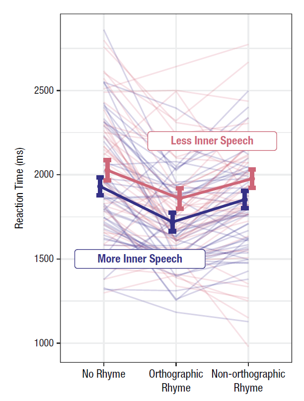
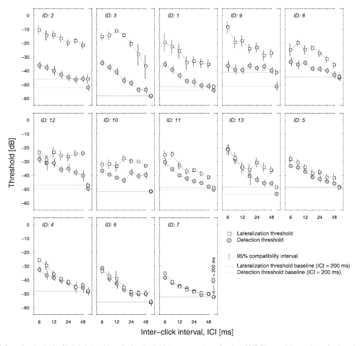
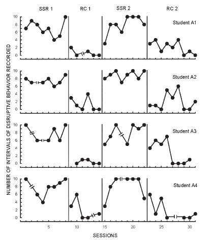
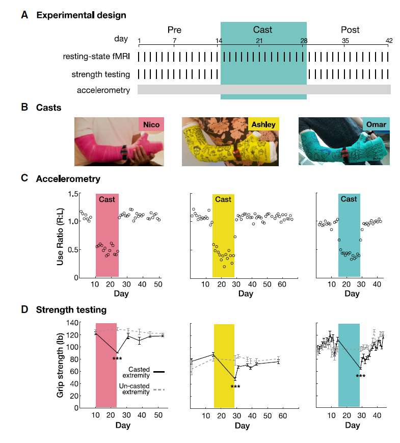
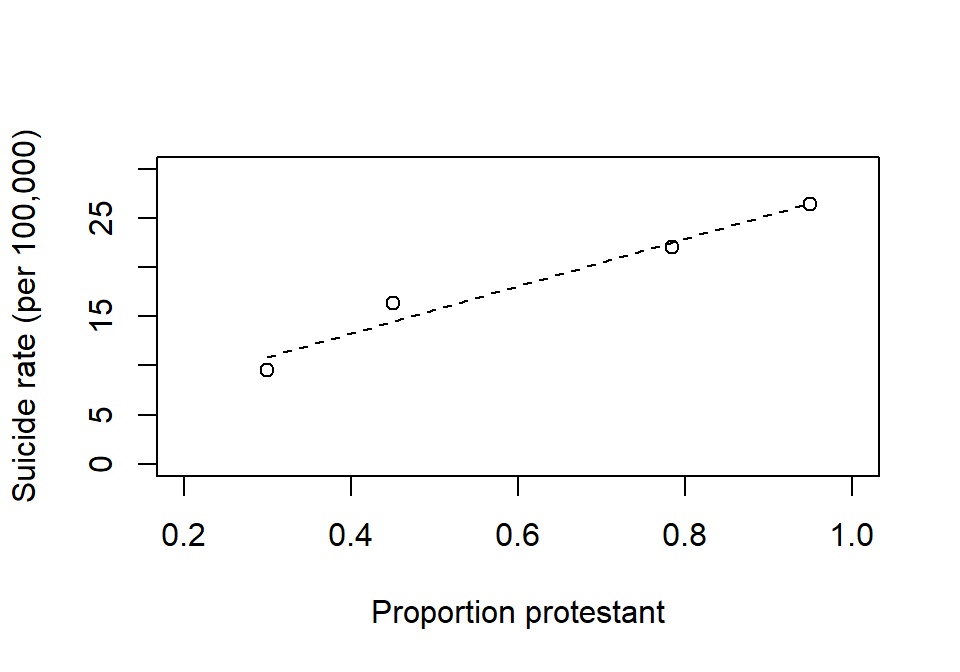

Code
library(dagitty) # R implementation of http://www.dagitty.netWarning: package 'dagitty' was built under R version 4.4.3Load R-libraries
library(dagitty) # R implementation of http://www.dagitty.netWarning: package 'dagitty' was built under R version 4.4.3Theoretical articles to read:
Other sources: - Gelman et al. (2021), chapter 18, briefly discuss issues related to within subject designs, see section “Close substitutes”, p. 341.
Within-subject designs are experimental designs where all participant take part in every condition of the experiment. These designs are therefor also called Repeated-measures designs.
One may distinguish between two reason for such designs:
Within-participant designs are a cost-effective method for estimating average causal effects because they allow researchers to separate out variation in overall performance during statistical analyses. This contrasts with between-participant experiments, where analyses must be conducted on averages from separate groups of individuals. Therefor, within-participant experiments typicality involve fewer participants than in between-participant designs.
A mixed design incorporates both within-participant and between-participant variables, often structured as a factorial design where all possible combinations of the variable levels are included.
For instance, consider a study comparing two treatments, A and B, using a within-participant design. The order of administering these treatments varies across two groups if participants: one group receives treatment A followed by B, whereas the other group receives them in the reverse order (a setup often referred to as a cross-over design). This variation in treatment order across participants illustrates the between-participant element in the mixed design.
In this example, the between-participant variable is not the primary focus; it is included mainly to assess potential effects of treatment orders. The researcher typically hopes there will be no substantial order effects, allowing the between-participant variable to be safely disregarded. There are of course mixed designs where the between-participant variable is the main focus, and these will be discussed later when we explore between-participant experiments.
The figure below is a nice example of a profile plot, illustrating the performance of a single individual tested across three conditions. This study aimed to compare groups of individuals based on their self-reported inner speech. The group averages reveal a clear trend: reaction times were faster in the ‘Orthographic rhyme’ condition compared to the other two conditions. However, was this trend consistent at the individual level? It’s difficult to say. The variability in individual profiles could be attributed to measurement errors, or it may reflect substantial individual differences. The profiles show average reaction times over 20 trials for each condition. This is far too few to obtain reliable reaction time estimates at the individual level, as typically, several hundred trials would be required.

One basic fact of all psychological research is that subjects differ greatly in their abilities to perform almost any task (on almost any dependent variable).
From a textbook on experimental psychology, (Kantowitz et al. (2014).
It is more useful to study one animal for 1000 hours than to study 1000 animals for one hour.
B.F. Skinner, cited in Smith & Little (2018).
A single-N design is a study aimed at estimating causal effects in a single individual. Although multiple participants are typically tested, the focus is always on presenting data at the individual level. Notably, Smith & Little (2018) refers to these as small-N designs, describing them as studies where ‘a large number of observations are made on a relatively small number of experimental participants’ (p. 2084). I prefer the term single-N design because ‘a relatively small number’ can often be just one.
In psychology, single-N studies are commonly used in fields such as psychophysics and behavioral intervention research, where they are often referred to as Single-Case Experimental Designs (SCED), see examples below.
Example: Psychophysical experiment
This is data from a psychoacoustic experiment involving 13 listeners. The details are less important, but focus on comparing thresholds (y-axis, low values are better) for the tasks involving detection of sounds (filled circles) versus localization of sounds (open squares). Some listeners had similar localization as detection thresholds (e.g., IDs 4, 6, and, 7), suggesting that if they could detect the sound they could also localize it. For others, this was not the case, most notably for the listeners in the upper row of panels. For details, see Tirado et al. (2021).

Example: Single-case Experimental Design (SCED)
This is data from an educational experiment involving measurement of four children’s disruptive behaviors in class (y-axis) over time (x-axis), while alternating between conditions A (SSR) and B (RC), in a ABAB-design. Details are not important, but it is clear that method B led to a decrease in disruptive behaviors compared to method A for all four children (each row refer to data from one child). For details, see Lambert et al. (2006).

Here’s another SCED, this one using an ABA design. The figure serves as an excellent example of a design illustration, particularly highlighting data for manipulation checks.

A single-unit is defined as a specific study-unit at a specific moment in time. For example, consider a participant, \(P\), in a psychophysical experiment at the moment \(i\), exposed to a stimulus \(s_i\). When the next stimulus, \(s_{i+1}\), is presented, technically, this constitutes a new study unit because time has passed and \(P\) is slightly older and have gained new experiences, specifically those related to exposure to \(s_i\). Consequently, the single-unit causal effect is always unobserved.
However, in many cases, we may have strong reasons to assume that the two single units are sufficiently similar to be treated as the same unit measured twice. If this assumption holds, we can reasonably interpret the difference between \(response(s_{i+1})\) and \(response(s_{i})\) as an estimate of the causal effect. It is crucial, though, to justify the assumptions that allow us to treat repeated measures on a single individual as a proxy for the unobservable repeated testing of the same unit.
Strategies for making such assumptions plausible include repeated measures on a single study unit (Single-N designs) and measures on equivalent units, which could be referred to as an “Identical-twin” design, assuming homogeneity of effects across these equivalent units.
As noted by Holland (1986), who coined the phrase The fundamental problem of causal inference, Single-N designs and Identical-twin designs are considered scientific solutions to this fundamental problem. In contrast, between-subject designs, such as randomized experiments, are referred to as statistical solutions.
Three main categories of threats to the internal validity of within-participant experiments (also known as repeated measures design) are:
Sequencing effects can be categorized into two types (Christensen et al. (2023)):
Maturation. The natural changes that occur in participants over time, independent of the experimental conditions. These changes can include physical, psychological, or cognitive developments that may confound the interpretation of experimental results.
History. External events that occur between the measurements of different § conditions and that can influence participants’ responses. These events are unrelated to the experiment but can introduce confounding variables that affect the outcomes.
And here a few examples of design elements to counteract these threats:
Many psychology studies focus on truly intra-individual phenomena, such as an individual’s ability to perceive, remember, or attend to something. Perception, memory, and attention exist at the individual level – the group has no perception, memories, or attention span (at least not in the same way as individual’s have)
Before calculating group averages or conducting statistical analyses that imply a group average (e.g., regression analysis), it’s crucial to ask yourself:
Are group-level analyses meaningful for my data?
In many cases, especially in psychology, the answer may be no. However, there are important exceptions where group-level analysis is appropriate and meaningful:
The Group Level Is the Focus: Sometimes, the primary interest is in understanding the effect of an intervention or phenomenon at the population level rather than the individual level. For instance, if you want to estimate the societal benefit of promoting a certain diet, you might express the outcome as the average weight loss in the target population. While some individuals may lose weight and others may gain, the overall effect is what matters for policy decisions. Similarly, if estimating the risk associated with an exposure, the focus is on relative risk across groups (e.g., exposed vs. unexposed individuals), which is inherently a group-level analysis. Risk, for instance, is calculated as the mean value of an indicator variable coded as 1 for diseased and 0 for healthy within a specified population.
The Group Average Represents a Typical Individual: If the group average accurately reflects the experience of a typical individual, then a group-level analysis may be meaningful. In such cases, interpreting the results at the individual level could be valid, assuming that individual differences are small or irrelevant.
Minimal or Negligible Individual Differences:If variability among individuals is so small that it can be considered mere measurement error, which cancels out when averaged, then a group-level analysis is justified. This scenario assumes that all individuals react similarly to the treatment or condition. If this assumption holds true, in principle, you could obtain reliable results from testing just one person.
In summary, while psychology often focuses on individual-level phenomena, there are circumstances where group-level analyses are both meaningful and necessary. Always critically evaluate whether the assumptions underlying your analysis are appropriate for your data.
Remember that group level analysis can not answer questions about single-unit causal effects:
Cross-level bias, also known as cross-level fallacy, aggregation bias or the ecological fallacy (terms I will use interchangeably), refers to the logical error of inferring that a trend observed at one level of analysis applies uniformly to all units at a lower level of analysis.
For example, if there is little or no difference between group averages in performance between a control group and a treatment group, this could indicate that:
The treatment had no or negligible effect on every individual.
The treatment had varying effects on individuals—some performed better, while others performed worse—resulting in the effects canceling out in the group average.
If scenario 2 is true, then it would be incorrect to conclude that the “treatment has no or negligible effect on individual performance”. This would be an example of aggregation bias.
Similarly, suppose the treatment group, on average, performed slightly better than the control group. This outcome could suggest that:
The treatment had a moderate effect on every individual.
The treatment had a significant effect on some individuals but no or negligible effect on others, leading to a moderate effect on average.
If scenario 2 is true, then it would be incorrect to conclude that the “treatment has a moderate effect on individual performance”. This would be an example of aggregation bias.
It is quite common for research papers in psychology to conclude, “Our results suggest that treatment A has a moderate effect on performance,” based solely on group-level analysis. However, if the study focuses on truly intra-individual phenomena, such as memory, attention, or perception, this conclusion assumes that the group-level result represents the treatment effects at the individual level—an assumption that is vulnerable to aggregation bias.
This risk is rarely discussed as an alternative explanation for the results. Authors often implicitly assume that the group-level result is representative of the treatment effects at the individual level. This assumption may or may not be accurate, and it should be explicitly addressed. Ideally, researchers should collect data that allows for individual-level analysis to avoid this bias.
The practice problems are labeled Easy (E), Medium (M), and Hard (H), (as in McElreath (2020)).
7E1. Threats to the validity of within-subject designs (also called repeated measure designs) include maturation, history effects, and carry-over effects. Explain each of these in your own words. Try to exemplify with reference to made-up scenarios.
7E2. According to my notes above, single-N designs are within subject designs, but not all within-subject designs are single-N designs. The difference being in the targeted causal effect. Explain.
7E3. Think of an experiment measuring responses under two treatments, A and B, and two groups of participants, one doing A before B, and the other doing B before A.
For each of the scenarios below, provide an example that would make it clear why the stated analytic strategy make sense.
7E4. Discuss the challenges in distinguishing between individual differences and measurement error in a within-participant experiment. Under what circumstances might it be difficult to determine whether observed variability is due to true individual differences or simply measurement error?
7E5. Remember B.F. Skinner: “It is more useful to study one animal for 1000 hours than to study 1000 animals for one hour” (cited in Smith & Little (2018))
In what situations is Skinner’s perspective valid, and when might it not be? Discuss the advantages and limitations of intensive study of a single subject compared to brief studies of multiple subjects. Consider factors such as the nature of the research question, the goals of the study, and the generalizability of the findings. Provide examples to illustrate your points.
7E6.
What is a mixed between-within-participant design?
Describe a study where the primary focus of a mixed design is the within-participant variation, with between-participant variation serving as a control condition.
Describe a study where the primary focus of a mixed design is the between-participant variation, with within-participant variation serving as a control condition.
7E7. Here a brief description of two emotion recognition experiments, both using a mixed design:
Eighty participants were randomly assigned to two different stimulus orders.
Participants were divided into two groups: 40 young adults (aged 20-35) and 40 older adults (aged 65-80), each group presented with the same set of stimuli.
Compare the extent to which the between-participant results can be given a causal interpretation.
7M1. This is from Wikipedia: “For each of the 48 US states Robinson computed the illiteracy rate and the proportion of the population born outside the US. He showed that these two figures were associated with a negative correlation of -0.53; in other words, the greater the proportion of immigrants in a state, the lower its average illiteracy. However, when individuals are considered, the correlation was +0.12 (immigrants were on average more illiterate than native citizens).”
7M2. In a within-subject experiment, you present 9 stimuli to each of 15 participants. The stimuli are repeated 11 times each, in total 99 stimuli presented in a random order. Discuss pros and cons of using:
7M3. Consider the following three methods for generating random orders of the 99 stimuli described in 7M2:
Generate a completely random order of the 99 stimuli.
Generate a random order of the 99 stimuli, with the constraint that each stimulus type (A, B, …, I) can only be repeated after all other stimuli have been repeated an equal number of times.
Generate a random order of the 99 stimuli, with the constraint that no stimulus is repeated consecutively in the sequence.
Evaluate the advantages and disadvantages of each method with respect to threats to validity of repeated-measure experiments.
7M5. You are interested in exploring how people learn to recognize emotional expressions. You have access to a large data set of videos in which individuals display eight specific emotions through facial expressions and vocal tones. Your objective is to train participants to accurately identify these emotions by showing them the videos and having them select the correct emotion from a list of eight options.
In this experiment, you aim to investigate how feedback (indicating whether their response was correct or incorrect) influences the improvement of emotion recognition over time through repeated testing.
Task: Design an experiment that examines the impact of feedback on the performance of individual participants using a single-subject (single-N) design. Assume you will be testing five participants. Your response should address the following components:
Specify the number of training sessions you will conduct, indicating which sessions will include feedback and which will not. Justify your choices and explain the reasoning behind the sequence and structure of these sessions.
Describe how you will distinguish the effects of feedback from other factors, such as practice effects or increased familiarity with the task, ensuring that any observed improvements can be attributed to feedback.
Detail your plan for data analysis, including the methods you will use to assess the impact of feedback on emotion recognition performance at the individual level.
7M6. A recent large and well-conducted randomized controlled trial compared weight loss in two groups: one following a low-calorie diet and the other a low-carbohydrate diet. Both groups lost an average of 3 kg over the 6-month study period (between-group difference = 0.0 kg, 95 CI [-0.4, 0.4]). Based on this study, I conclude:
“Since both diets resulted in similar weight loss, it doesn’t matter which one I follow—either a low-calorie or low-carbohydrate diet will have the same effect for me.”
Critically assess this conclusion.
7H1. The figure below is data from a classical study on suicide rate and religious affiliation (data from 1880-1890). Suicide rate seem to increase with the proportion of protestants in four provinces (each data point refer to one province). The conclusion was that their religion make Protestants more likely to commit suicide than non-Protestants (primarily Catholics in this data). Find an alternative explanation.
Example from Morgenstern et al. (2021), data originally presented by the sociologist Emile Durkheim.
x <- c(0.3, 0.45, 0.785, 0.95)
y <- c(9.56, 16.36, 22.0, 26.46)
plot(x, y, xlim = c(0.2, 1), ylim = c(0, 30), xlab = "Proportion protestant",
ylab = "Suicide rate (per 100,000)")
cf <- coef(lm(y ~ x))
xx <- c(0.3, 0.95)
yy <- cf[1] + cf[2]*xx
lines(xx, yy, lty = 2)
7H2. Below is a schematic representation of a classic experimental design known as the Solomon four-group design. This design involves a treatment condition (X) with outcome (O) measured before and/or after the treatment. Participants are randomly assigned to one of the four groups, and the aim is to estimate the causal effect of treatment on outcome.
Discuss the purpose of each group in this design with respect to reducing potential threats to internal validity.
| Group | Pre-treatment | Treatment | Post-treatment |
|---|---|---|---|
| 1 | O | X | O |
| 2 | O | O | |
| 3 | X | O | |
| 4 | O |
7H3. Here stimulus orders for four participants (1-4), each tested on four conditions (A, B, C, D). Is this a balanced Latin square design? Motivate why or why not.
1 "A" "B" "D" "C"
2 "B" "C" "A" "D"
3 "C" "D" "B" "A"
4 "D" "A" "C" "B"sessionInfo()R version 4.4.2 (2024-10-31 ucrt)
Platform: x86_64-w64-mingw32/x64
Running under: Windows 11 x64 (build 26100)
Matrix products: default
locale:
[1] LC_COLLATE=Swedish_Sweden.utf8 LC_CTYPE=Swedish_Sweden.utf8
[3] LC_MONETARY=Swedish_Sweden.utf8 LC_NUMERIC=C
[5] LC_TIME=Swedish_Sweden.utf8
time zone: Europe/Stockholm
tzcode source: internal
attached base packages:
[1] stats graphics grDevices utils datasets methods base
other attached packages:
[1] dagitty_0.3-4
loaded via a namespace (and not attached):
[1] digest_0.6.37 fastmap_1.2.0 xfun_0.52 knitr_1.50
[5] htmltools_0.5.8.1 rmarkdown_2.29 cli_3.6.5 compiler_4.4.2
[9] boot_1.3-31 rstudioapi_0.17.1 tools_4.4.2 curl_6.4.0
[13] evaluate_1.0.3 Rcpp_1.0.14 yaml_2.3.10 rlang_1.1.6
[17] jsonlite_2.0.0 V8_6.0.4 htmlwidgets_1.6.4 MASS_7.3-61